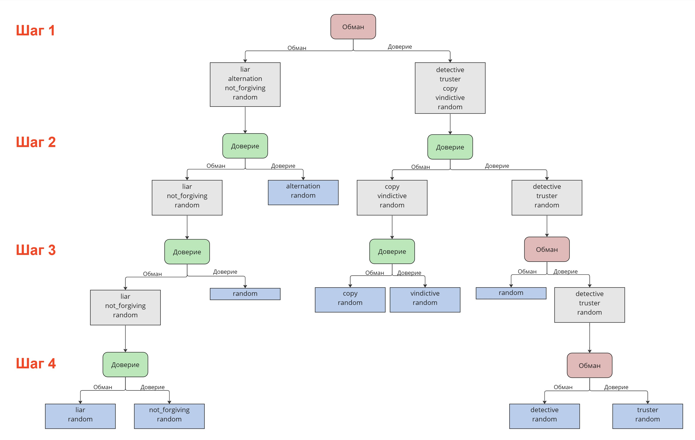

Решение модели Dubble Choice Model
Ниже представлено дерево решений, показывающее минимальное
количество шагов, за которые можно угадать любую стратегию.
Самым сложным в угадывании оказывается страгегия random,
потому что точно сказать, что противник имеет такую стратегию
можно только в том случае, если были исключены все остальные стратегии.
Можно заметить, что в некоторых случаях на изображении, можно точно сказать,
что это random. Несмотря на это, остальные листья деревьев содержат две стратегии. Соглашаясь с этим условием, максимальная глубина полученного дерева -
4 шага, иначе дерево могло бы получиться бесконечным.
Шансы рандомной стратегии в зависимости от номера шага:
| Номер шага |
Вероятность |
| 2 |
25% |
| 3 |
12.5% |
| 4 |
6.25% |
Дерево решений

Для удобства анализа дерева решений листья отменечены синим цветом,
требуемые выборы пользователя - зеленым и красным соотвественно.
Представленный вариант решения не является единственным, но он гарантирует
минимальное количество шагов для определения каждой из стратегий.